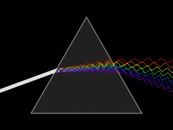
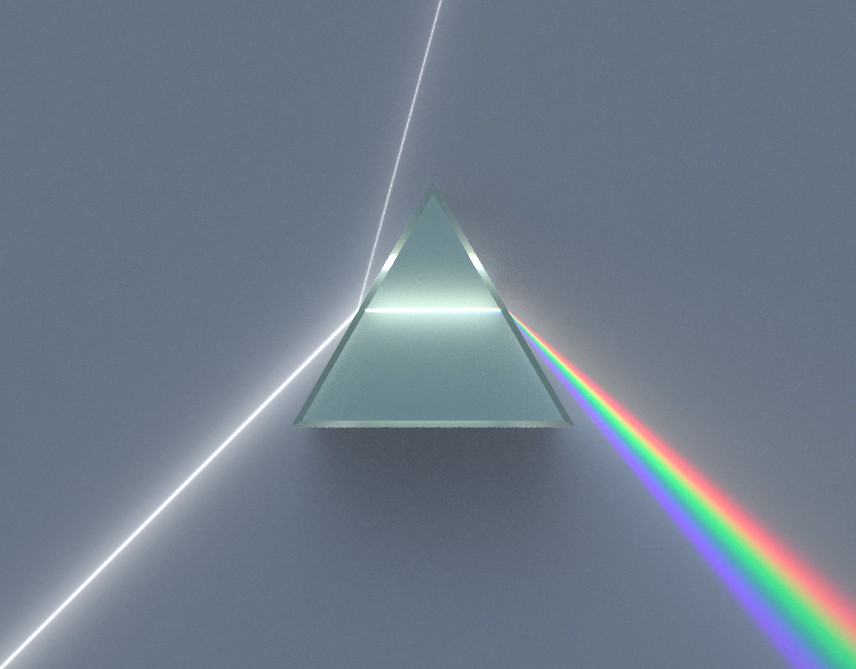

Waves and Light
Elijah R. Jensen M.S. Physics Dept.
University of Louisville

What is a Wave???
Oscillating motion in time and space.
Rock in a Pond
$v = f \lambda $ $\lambda = $ wavelength
Superposition.
Light Waves
Light waves
are made of Electric and
Magnetic Fields that propagate through space.

Not all light waves are visible!
Some are hard or even Impossible to see!



Dispersion, Refraction, and Diffraction.

Thomas Young
LETS TRY IT!
Physics is PHUN!
Why is the sky blue?
IS the sky Really blue?
Thank you!
Questions?